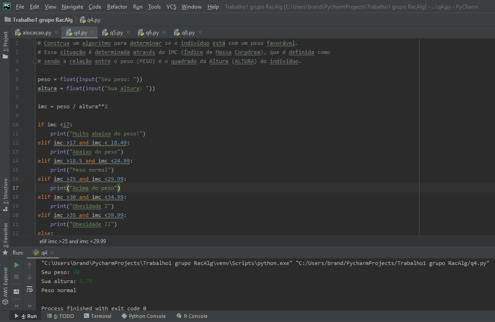
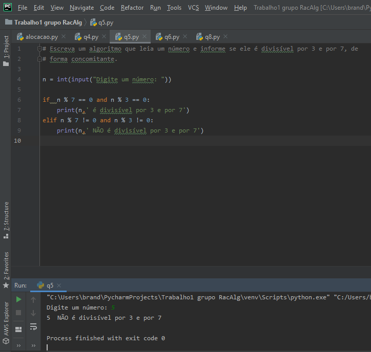
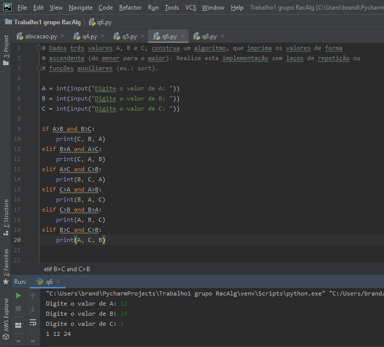
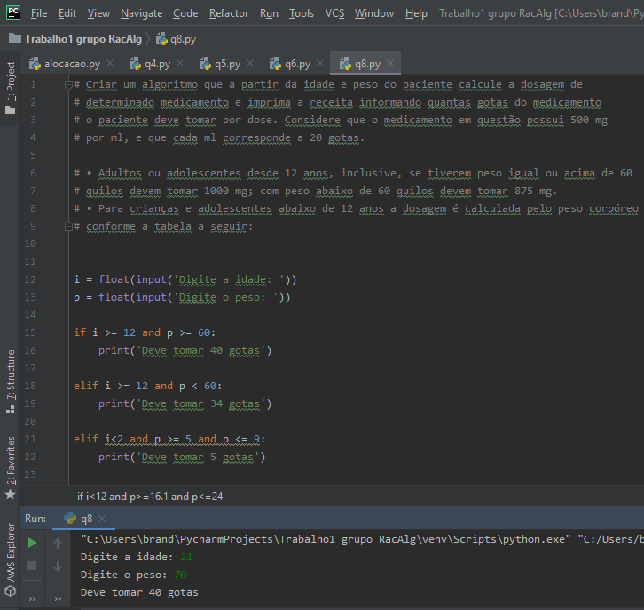
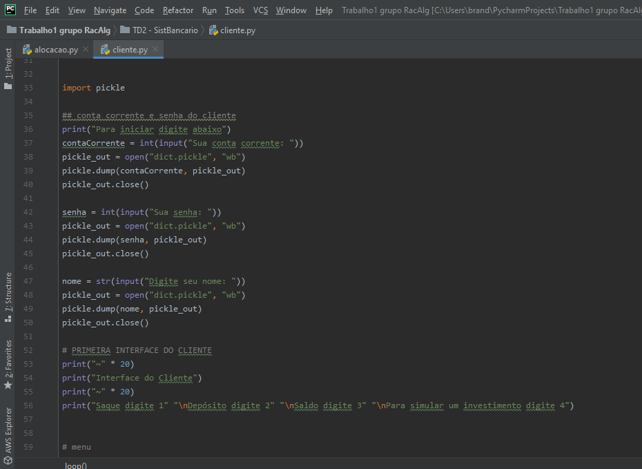
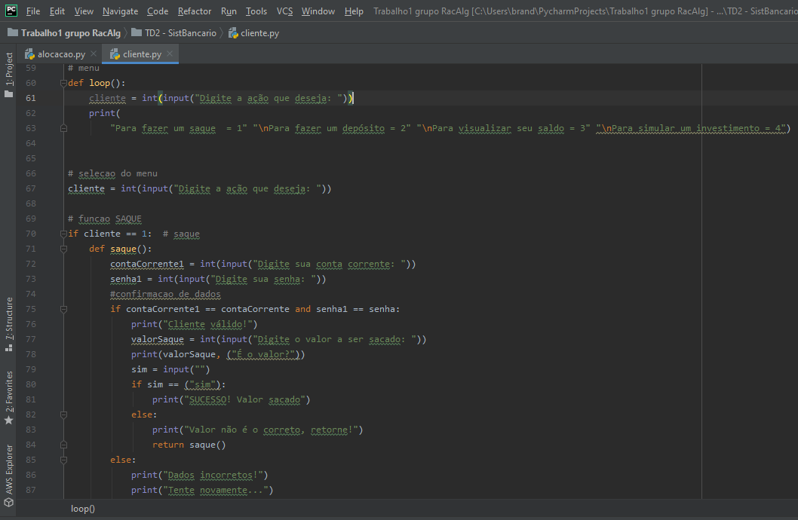
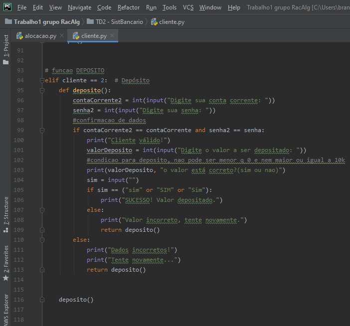
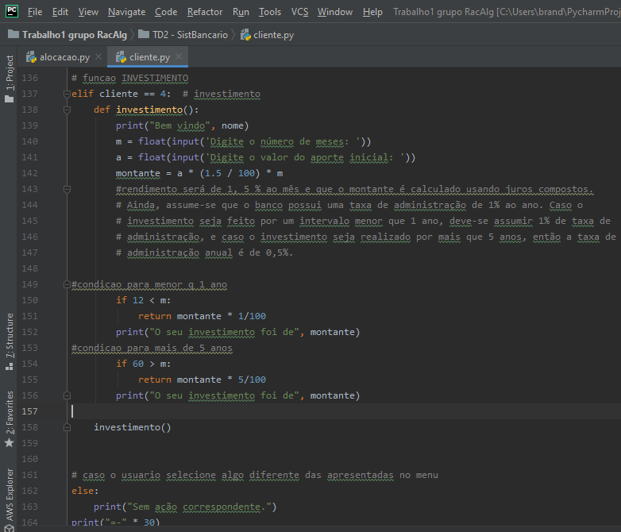

Nessa matéria tivemos três TDEs que se baseavam em trabalhar com o PyCharm e compreender sua funcionalidade,
bem como a formatação de códigos e comentários.
(POR QUESTÕES PRÁTICAS IREI MOSTRAR OS CÓDIGOS EM FORMA DE
FOTOS E ALGUMAS QUE ACHEI INTERESSANTE)
Trabalho Discente Efetivo 1: Fomos encarregados de formar nove resoluções de nove problemas expostos,
com o auxílio do PyCharm e do professor, iniciamos em aula a resolução dos mesmos e foi dado um
prazo limite para a finalização. O intuito era nos familiarizar com o programa e o código,
pois ainda era começo de semestre.
Questão 4:

Questao 5:

Questão 6:

Questão 8:

Trabalho Discente Efetivo 2: Aqui as coisas se tornaram bem mais interessantes bem como desafiadoras,
fomos encarregados de criar duas interfaces para um banco, o primeiro era do cliente e o segundo, do
gerente. As informações deveriam ser armazenadas pelo Picle e apresentadas logo depois, era preciso fazer
o cadastro do cliente pelo gerente e conseguir armazenar e apresentar esse cadastro caso fosse solicitado.
Interface Cliente:




Trabalho Discente Efetivo 3: Nesse último TD3 fomos encarregados de Alocar Memória, o trabalho foi
extremamente difícil mas juntamente com um competente grupo conseguimos realizá-lo.
(Por ser muito extenso vou enviar algumas partes chaves, o total de linhas do código foram de 1902)
Grupo: Carlos Henrique, Matheus Muller, Manoel Bina, João Vitor Brandão.